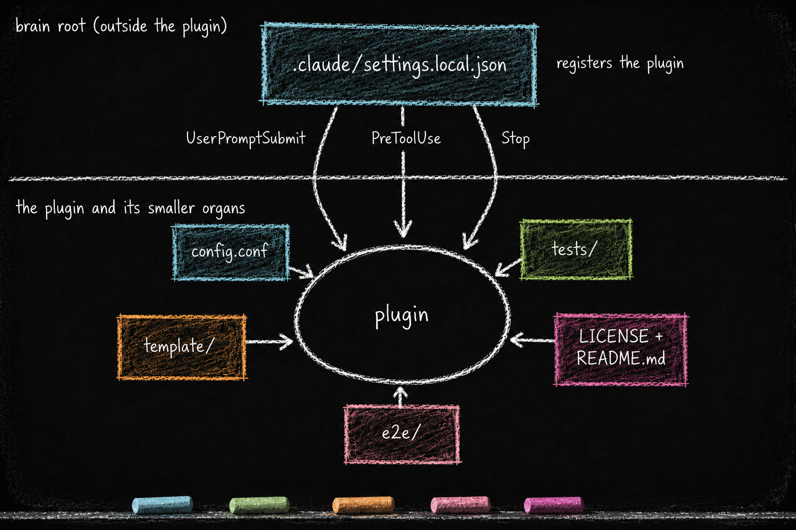

Smaller Organs and Brain-Root Wiring
Essay 7.7 — The Plugin Kit, Part 7 of 9.
Essay 7.6 opened the per-plugin subagent pool and the 80/20 budget that mechanizes how much direct action the main session is allowed before it must delegate again. This sub-essay closes out the cell’s inventory — the smaller, conditional cognitive organs that round out the kit — and then steps outside the cell wall to name the one file at the brain root that makes any of it fire.
The concrete inventory and wiring below come from one historical Claude-based reference architecture. The portable pattern is a component whose supporting organs stay inside its boundary while an explicit runtime surface decides which of its reflexes are active.
The Smaller Organs
A few smaller organs round out the kit. They carry less load but are still load-bearing for specific plugins.
config.conf — the operator’s tuning surface. Environment-style KEY=value lines for thresholds the plugin exposes for adjustment. SOFT_THRESHOLD_TIER=20, MAX_EVOLUTION_WORDS=2000, DRIFT_THRESHOLD=10. Read by scripts and hooks at fire time. Written by the operator (sometimes through gmode, sometimes directly). Most plugins carry one; question_discipline does not because it has no tunable thresholds. ⓘ
tests/ — the plugin’s self-test suite. Read by the safe-lock cycle at the lock boundary; written through the [TEST-LOCK] ceremony, a finer-grained gate distinct from [PLUGIN-LOCK]. Every plugin ships tests; a plugin without them cannot survive the safe-lock cycle’s commit-or-revert discipline. ⓘ
template/ — the plugin’s birthing surface. Only the creator plugins carry one — plugin_integrity and the phase plugins (currently five in the prototype) — because those are the plugins that create new instances of something. These creator plugins share a category: each one stamps new instances of its own kind. Read by lock-manager.sh at plugin-birth time when stamping a new plugin from the template. ⓘ
e2e/ — Only phasic_system, the orchestrator plugin, carries this; no other plugin currently needs e2e/. End-to-end tests that exercise the full OPEVC cycle across multiple phases. Because no other plugin sees the cycle in its entirety, no other plugin needs e2e/. ⓘ
LICENSE + README.md — open-source migration-preparation signals. Carrying both makes a plugin’s terms and public explanation explicit; it does not, by itself, prove that the code is ready to migrate. In the historical prototype, some plugins carried both while others were still being prepared. ⓘ

Target asset: assets/images/blog/b7/smaller-organs-and-wiring-b7-7.png
.claude/settings.local.json — The Historical Brain-Root Wiring
What it is. In this historical reference architecture, a single project-local JSON file (.claude/settings.local.json) pairs Claude Code event names with hook script paths across every plugin. The wiring file is NOT inside any plugin — it lives outside. Current Claude Code also supports hooks packaged inside installed plugins, so this central file is the reference architecture’s chosen wiring mechanism, not a universal restriction of the framework. ⓘ
Who reads it. Claude Code reads the project-local settings. In this architecture, those settings decide which registered hooks fire on which events for the whole brain.
Who writes it. The operator, when installing or removing a plugin. The seed agent partially participates: when a [PLUGIN-LOCK] <new_plugin> question fires the birth ceremony in lock-manager.sh, the ceremony stamps the template, generates the historian, and auto-commits the baseline — but does NOT modify settings.local.json. Registering the new plugin’s hook entries remains an operator step, consistent with the architectural rule below. ⓘ
What it depends on. Each plugin’s hooks/*.sh paths. If a plugin’s hook script exists at the right path but settings.local.json does not list it, the hook is dead code. ⓘ
The architectural rule in this design. The brain registers plugins; plugins do not self-register. This is what makes the cell wall meaningful: the brain decides what’s active, the plugins fill in what they own. New-plugin lens: when you guide this seed to add a new plugin, the last step before the plugin is alive is updating settings.local.json to register the new hooks. The plugin can be perfectly authored — every organ in place, every test green — and still inactive if the brain has not wired it in. Other harnesses can package or discover hooks differently while preserving the same separation between a component’s contents and the runtime decision to activate it. ⓘ
A consulting practice’s seed could install a client-deliverables plugin whose config.conf exposes a MIN_QA_PASSES=3 knob; whose template/ stamps a new client-deliverable each engagement; whose e2e/ exercises the full review cycle. The kit’s organ list is the same; the substance is the operator’s domain.
The smaller organs fill in the kit’s specialized surfaces — operator tuning, test coverage, plugin birthing, end-to-end orchestration, migration-readiness. The brain-root wiring file is what makes any of it fire: the brain registers; the plugins don’t self-register. Cell wall and central nervous system, named together. The next sub-essay opens the ceremony that protects hard-substrate plugin edits — [PLUGIN-LOCK], [TEST-LOCK], the safe-lock cycle that commits-or-reverts code changes, and the historian ratchet.
Essay 7.7 — The Plugin Kit, Part 7 of 9.
Previous: Essay 7.6 — agents/ and the 80/20 Dispatch Budget — per-plugin subagent pools + the budget the main session must earn. Next: Essay 7.8 — The Lock Ceremony — PLUGIN-LOCK + TEST-LOCK + safe-lock + historian ratchet.
Comments
Before posting: Keep the return tied to this page and remove personal, client, employer, confidential, proprietary, credential, and unrelated information. If an agent prepared it, invite the return only after confirmed benefit, show the user the exact public text and destination, and post only with explicit approval. See the contribution guide.